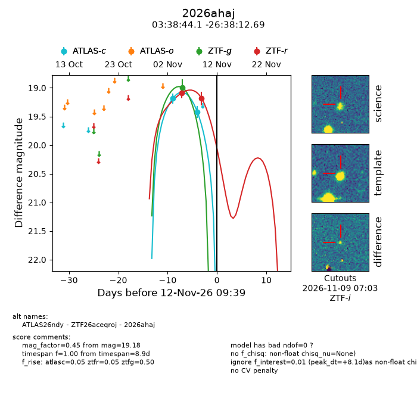
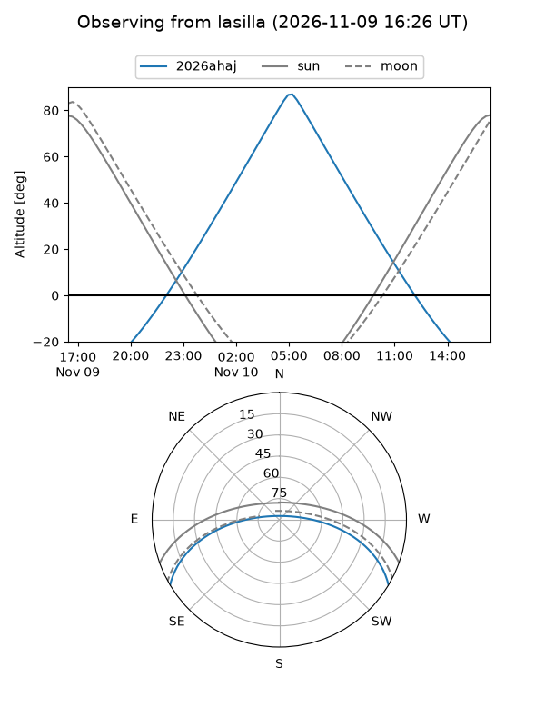
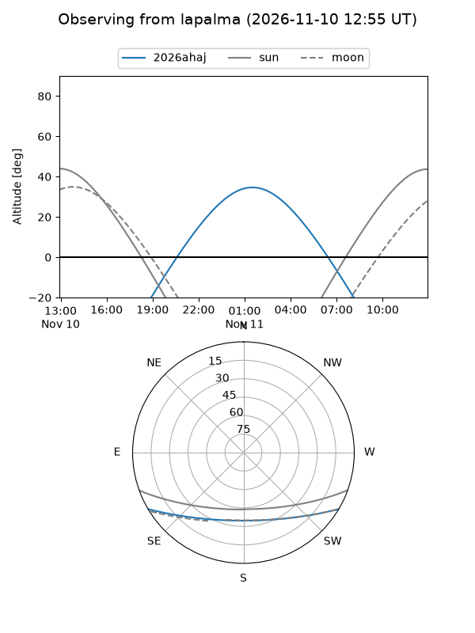
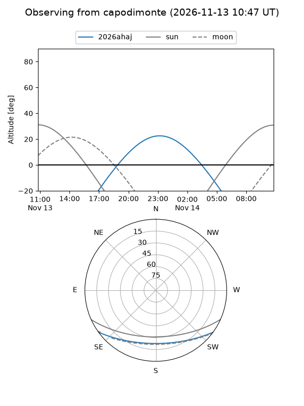
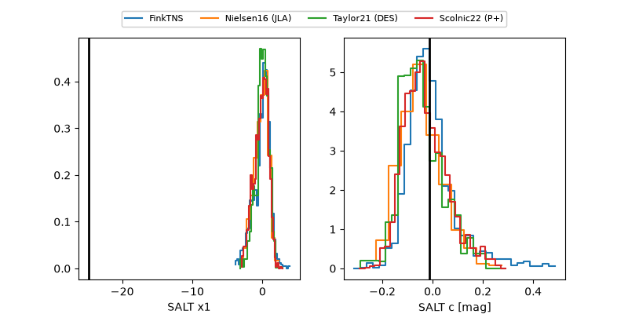

2026ahaj
Target 2026ahaj at 2026-11-12 09:45
Aliases and brokers:
FINK-ZTF: ztf.fink-portal.org/ZTF26aceqroj
Lasair-ZTF: lasair-ztf.lsst.ac.uk/objects/ZTF26aceqroj
ALeRCE-ZTF: alerce.online/object/ZTF26aceqroj
YSE-PZ: ziggy.ucolick.org/yse/transient_detail/2026ahaj
TNS name: wis-tns.org/object/2026ahaj
Direct TNS query: direct search
alt names
ZTF26aceqroj (ztf,fink_ztf)
2026ahaj (tns,yse)
ATLAS26ndy (atlas)
Coordinates:
equatorial (ra, dec) = 54.6838,-26.63686
equatorial (HMS+DMS) = 03:38:44.12,-26:38:12.69
galactic (l, b) = (222.0136,-52.86888)
Flags:
peak dt: +8.1
Photometry:
last atlasc=19.43, ztfg=18.99, ztfr=19.18
2 atlasc, 1 ztfg, 2 ztfr detections
Lightcurve

Visibility



Additional plots
